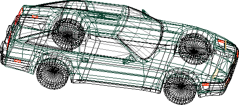
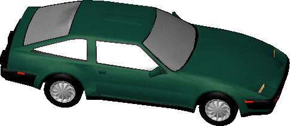
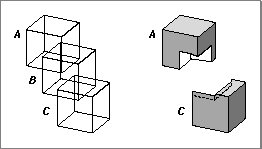

About Renderer Objects
A renderer object (or, more briefly, a renderer) is a type of QuickDraw 3D object that you can use to render a model--that is, to create an image from a view and a model. A renderer controls various aspects of the model and the resulting image, including:To render an image of a model, you first need to create an instance of a renderer object. Once you've decided which renderer you want to use, you then create an instance of that renderer and attach it to a view. You can do
- the kinds of geometric objects the renderer can draw without decomposing them into simpler objects
- the parts of objects to be drawn (for example, only the edges or filled faces)
- the types of lights that are available and the illumination model to be applied
- the types of shaders that are available and kinds of interpolation that can be performed
this in several, ways, by callingQ3Renderer_NewFromTypeand thenQ3View_SetRenderer, or by calling the functionQ3View_SetRendererByType.Types of Renderers
QuickDraw 3D currently supplies three types of renderers, a wireframe renderer, an interactive renderer, and a generic renderer. Only the wireframe and interactive renderers can actually draw images; the generic renderer is available for you to collect a view's state without actually rendering an image.The wireframe renderer creates line drawings of models; it operates extremely quickly and with comparatively little memory. Figure 11-1 shows an example of a model drawn by QuickDraw 3D's wireframe renderer (see also Color Plate 1 at the beginning of this book).
Because a wireframe image is simply a line drawing, there is no way to illuminate or shade surfaces. The wireframe renderer ignores the group of lights associated with a view and invokes none of the standard shaders supplied by QuickDraw 3D.
Figure 11-1 An image drawn by the wireframe renderer

The interactive renderer uses a fast and accurate depth-sorting algorithm for drawing solid, shaded surfaces as well as vectors. It is usually slower and requires more memory than the wireframe renderer. When the size of a model is reasonable and only very simple shadings are required, however, the interactive renderer is usually fast enough to provide acceptable interactive performance. The interactive renderer is also capable of rendering highly detailed, complex models with very realistic surface illumination and shading, but at the expense of time and memory. On machines with small amounts of memory, the interactive renderer may need to traverse a model in multiple passes to render the image completely. Figure 11-2 shows an image created by QuickDraw 3D's interactive renderer.Figure 11-2 An image drawn by the interactive renderer

The interactive renderer is capable of driving either a software-only rasterizer or a hardware accelerator. In general, the interactive renderer uses a hardware accelerator if one is available, to provide maximum performance. You can, however, set the renderer preferences to indicate whether the interactive renderer should operate in software only or whether it should take advantage of a hardware accelerator. (See the "Using Renderer Objects" for details on setting a renderer's preferences.)The interactive renderer supports all three available illumination shaders (Phong, Lambert, and null). Some rendering capabilities, however, are available only when the interactive renderer is using the hardware accelerator supplied by Apple Computer, Inc., including transparency, shadows, and constructive solid geometry (CSG). In addition, the interactive renderer always ignores the
clearImageMethodfield of a draw context data structure, whether using software-only rasterization or a hardware accelerator. The screen is always cleared with the clear image color specified in theclearImageColorfield.Constructive Solid Geometry
When the hardware accelerator provided by Apple Computer, Inc., is available, the interactive renderer can support constructive solid geometry (CSG), a method of modeling solid objects constructed from the union, intersection, or difference of other solid objects. For instance, you can define two cubes and then render the solid object that is the intersection of those two cubes. Similarly, you can define three cubes and render the solid object that is the union of two of them minus the third. For example, Figure 11-3 shows three cubes (A, B, and C) together with the result of using CSG to create the solid object defined by the function (A � C) << �B.Figure 11-3 A constructed CSG object
- Note
- In this chapter, CSG operations are described using standard set operators: the operation A << B is the set of all points that are in both A and B (that is, the intersection of A and B); A � B is the set of all points that are in either A or B (that is, the union of A and B); �A is the set of all points that are not in A (that is, the complement of A).

The interactive renderer supports CSG operations on up to five objects
in a model. You select the objects to operate on by assigning a CSG
object ID to an object, as an attribute of typekQ3AttributeType_ConstructiveSolidGeometryID. There are five CSG object IDs:kQ3SolidGeometryObjA kQ3SolidGeometryObjB kQ3SolidGeometryObjC kQ3SolidGeometryObjD kQ3SolidGeometryObjEYou specify the CSG operations to perform by passing a CSG equation to theQ3InteractiveRenderer_SetCSGEquationfunction. A CSG equation is a 32-bit value that encodes which CSG operations are to be performed on which CSG objects. QuickDraw 3D provides constants for some common CSG operations:typedef enum TQ3CSGEquation { kQ3CSGEquationAandB = (int) 0x88888888, kQ3CSGEquationAandnotB = 0x22222222, kQ3CSGEquationAanBonCad = 0x2F222F22, kQ3CSGEquationnotAandB = 0x44444444, kQ3CSGEquationnAaBorCanD = 0x74747474 } TQ3CSGEquation;For instance, the constantkQ3CSGEquationAandBindicates that the interactive renderer should render only the intersecting portion of the objects with CSG object IDskQ3SolidGeometryObjAandkQ3SolidGeometryObjB. There are 232 CSG equations for the five possible CSG objects. You calculate a CSG equation for a particular configuration of objects A, B, C, D, and E by using Table 11-1.You calculate a CSG equation by determining which of the rows in the table satisfy the desired CSG construction. Then you set the indicated bit positions in a 32-bit value and clear the remaining bit positions. For instance, the value 1 appears in both of the columns for objects A and B for bit positions 3, 7, 11, 15, 19, 23, 27, and 31. The CSG equation, then, for the operation A << B is 10001000100010001000100010001000, or 0x88888888 (
kQ3CSGEquationAandB). Similarly, the value 1 appears in the column for object A and the
value 0 appears in the column for object B for bit positions 1, 5, 9, 13, 17,
21, 25, and 29. The CSG equation, then, for the operation A << �B is 00100010001000100010001000100010, or 0x22222222 (kQ3CSGEquationAandnotB). Finally, the CSG equation used to construct the composite object shown in Figure 11-3 on page 11-6, drawn using the operation (A � C) << �B, is 00110010001100100011001000110010, or 0x32323232.Transparency
Transparency is the ability of an object to transmit light, possibly permitting a viewer to see objects behind it. The interactive renderer allows you to draw objects with varying degrees of transparency. You specify how much light can pass through an object by setting its transparency color. A transparency color is an attribute of typeTQ3ColorRGB, where the value (0, 0, 0) indicates complete transparency, and (1, 1, 1) indicates complete opacity. By default, objects are rendered opaque.You specify an object's transparency color by adding an attribute of type
kQ3AttributeTypeTransparencyColorto the object's attribute set. QuickDraw 3D multiplies that transparency color by the object's diffuse
color whenever a transparency color attribute is attached to the object.